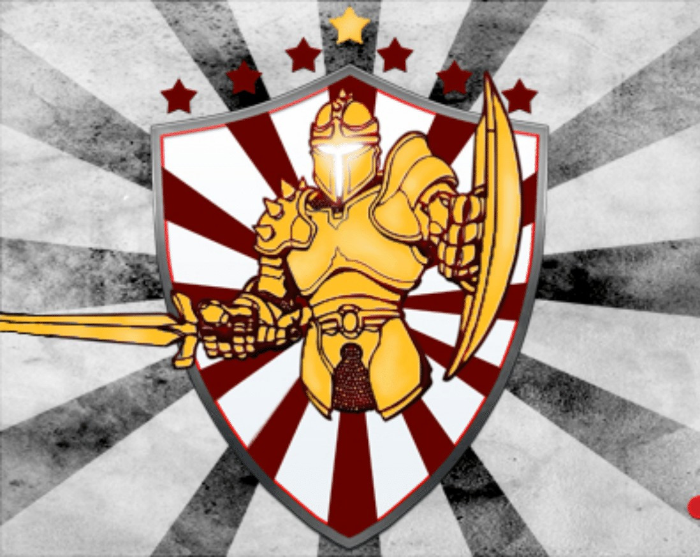
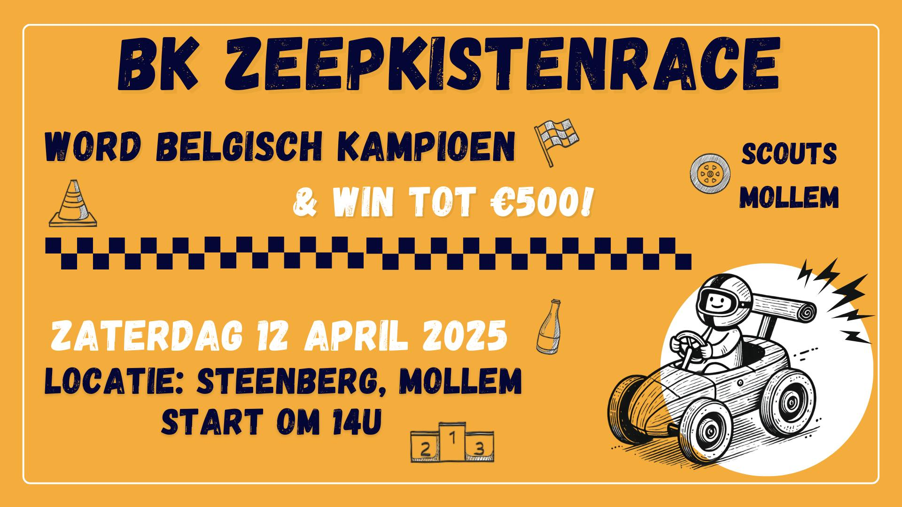
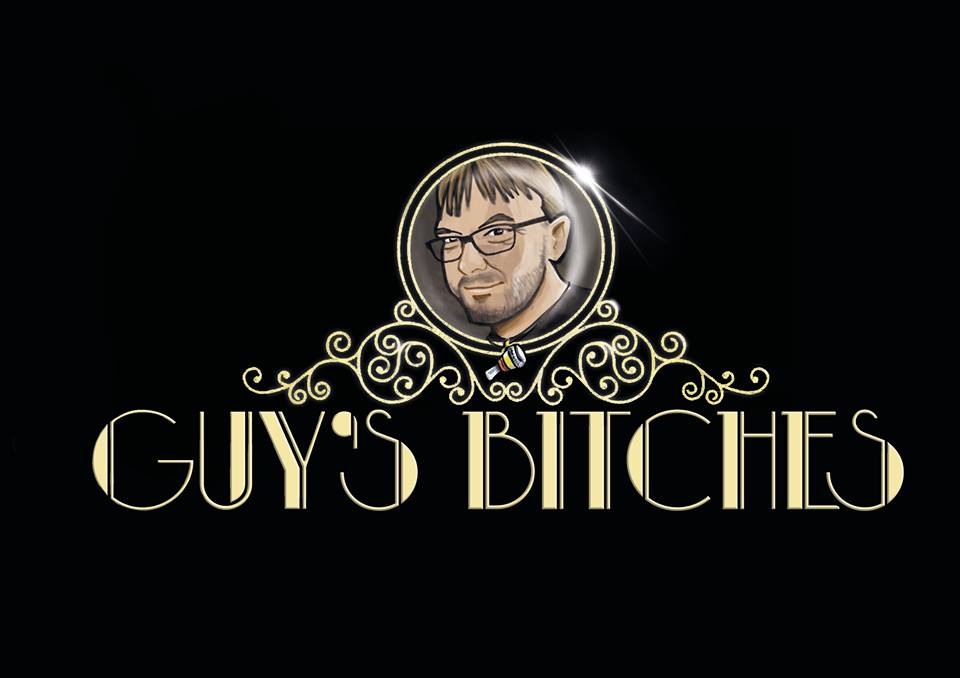
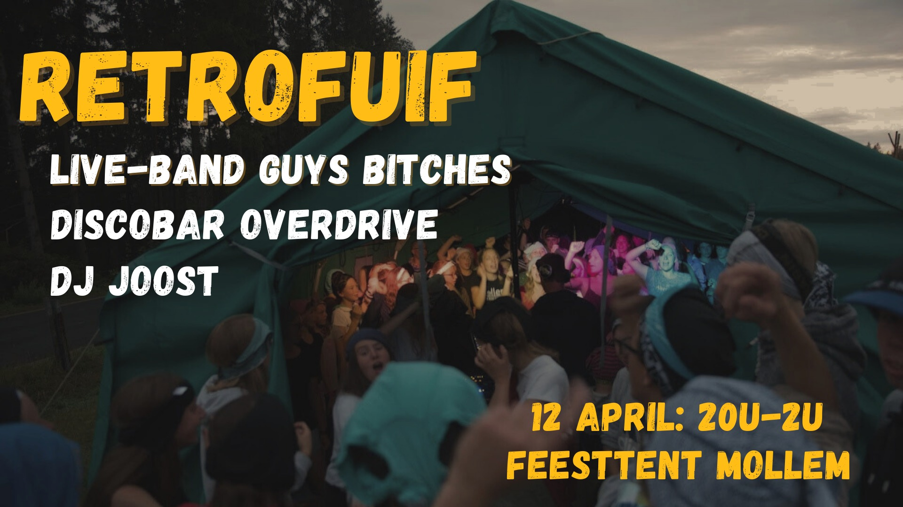
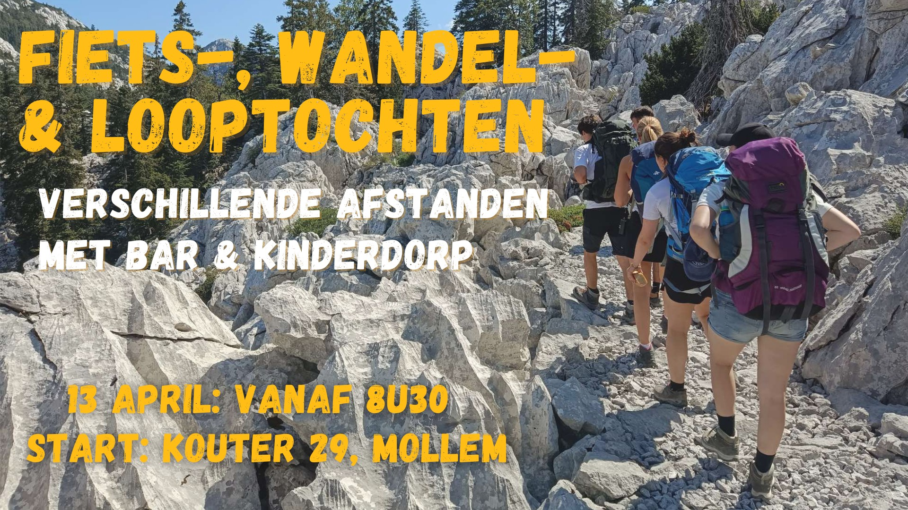

Knallende DJ-sets van 5NAPBACK of Arthur Lewis & Gerben Tuerlinckx, duizend feestende jongeren op het derde voetbalplein en een traktatie voor ons jubileum? Het is alweer tijd voor de 15e editie van The White (K)night en die Golden Edition belooft extra hard te knallen!
Meer info
Een parcours van meer dan 600 meter met hindernissen, de titel Belgisch kampioen en een
prijzenpot van maar liefst €500. Dat is spektakel gegarandeerd op de Steenberg op
zaterdagnamiddag! Of kom jij liever voor onze randanimatie (vb. rodeostier) en de drankjes
& snack aan onze bar?
Schrijf je hier in met jouw zeepkist!
Vergeet bij de inschrijving zeker niet om ons
reglement
door te nemen zodat jouw zeepkist aan de technische vereisten voldoet… Heel veel succes


Vorig jaar stond de feesttent in vuur en vlam na het optreden van Guy’s Bitches op The Grey (K)night en ook dit jaar belooft het alweer te knallen! Zij trappen met een medley van de beste hits onze Retrofuif op gang!
Meer infoPure nostalgie op zaterdagavond met DJ-sets van Discobar Overdrive & DJ JOOST! Want met deze DJ’s, gekend in Mollem en omstreken, is de sfeer op de dansvloer tot in de vroege uurtjes verzekerd!
Meer info

Fiets, wandel & loop op zondag 13 april met ons mee en ontdek de mooiste plekjes van Mollem en omstreken! Met verschillende afstanden voor elke sportieveling, een zomerse bar en een kinderdorp sluiten we ons feestweekend goed af!
Meer info